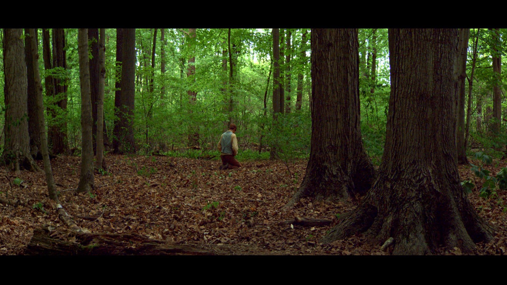

The First Vision
In the spring of 1820, God the Father and Jesus Christ appeared to Joseph Smith as he prayed in a grove of
trees near his home in western New York. This event is known as the First Vision. (To read about the vision
in Joseph’s own words, click here.)
In the early 1800s in the United States there was great excitement about religion. Joseph’s family members
had joined different churches, but Joseph was unsure which one he should join.


When Joseph was 14 years old, he was inspired by James 1:5, which promises, “If any of you lack wisdom, let
him ask of God, that giveth to all men liberally, and upbraideth not; and it shall be given him.” Joseph
determined to pray to know which church he should join and to ask for forgiveness of his sins.
When Joseph knelt to offer up the desires of his heart, a dark power overcame him. It bound his tongue as
thick darkness gathered around him. Joseph exerted all his power to call upon God.
He described what happened next:
“I saw a pillar of light exactly over my head, above the brightness of the sun, which descended gradually
until it fell upon me.
“… When the light rested upon me I saw two Personages, whose brightness and glory defy all description,
standing above me in the air. One of them spake unto me, calling me by name and said, pointing to the
other—This is My Beloved Son. Hear Him!”
At the moment the light appeared, Joseph felt delivered from the
enemy that had held him bound. Joseph felt great joy and love for several days after.
During the vision, Joseph asked which church was correct, and Jesus Christ answered, telling Joseph not to
join any of them. The Lord explained that the churches of the day believed “in incorrect doctrines, and that
none of them was acknowledged of God as His Church and kingdom.”2 The First Vision marked the beginning of
the Restoration of the gospel of Jesus Christ in this last dispensation. Joseph Smith was chosen to be the
Lord’s prophet in the latter days.
Over time, the Lord restored His authority and Church through Joseph
Smith. God’s children were again blessed with revelation through prophets called of God, just as they were
in biblical times. Revelation continues to this day through each of God’s chosen prophets who have succeeded
Joseph Smith.